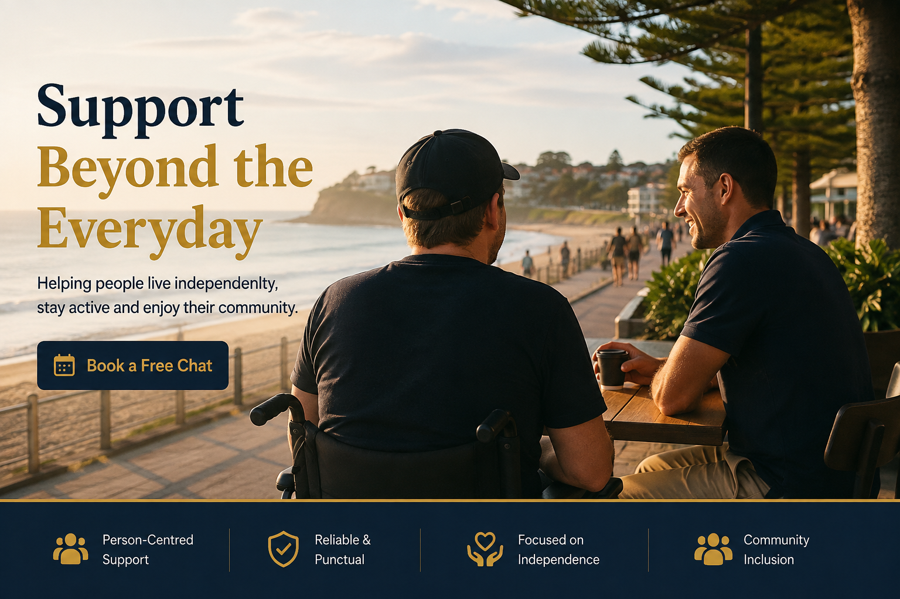

Person-centred support across Sydney
Support Beyond
the Everyday
Helping people live independently, stay active and enjoy their community.
Book a Free ChatFlexible, practical support
Services
Support shaped around your interests, goals and everyday routine.
Transport
Shopping & Errands
Gym & Fitness Support
Medical & Personal Appointments
Holidays & Getaways
Social Outings
Technology & Digital Skills Support
Assistance with Daily Living
Light Household Assistance
Real support for real life
How I Can Support You
Support can be relaxed, practical, social or goal-focused. We can plan activities that suit your personality, interests and confidence level.
- Coffee catch-ups and social outings
- Beach walks and community activities
- Shopping and errands
- Gym and fitness sessions
- Medical appointments
- Day trips and holidays
- Learning computer and digital skills
- Resume writing and basic Microsoft Office assistance
- Building confidence and independence
Support that fits your life
Why Choose Me?
Reliable and punctual
Friendly and approachable
Personalised one-on-one support
Flexible to individual goals
Comfortable, modern vehicle
Focused on choice, control and independence
Building confidence and helping people enjoy life
Practical skills with a professional background
Professional Experience That Benefits You
With many years of experience in corporate leadership, sales and customer service, I bring a broad range of practical skills to my support work.
Along with community participation and everyday support, I can also assist participants with:
- Building confidence using computers, tablets and smartphones
- Basic Microsoft Word, Excel and PowerPoint
- Creating and updating resumes
- Email and online forms
- Organising appointments and documents
- Everyday technology support
- Goal setting and building independence
My aim is to help participants develop practical life skills that increase confidence, independence and participation within their community.
Professional, safe and dependable
Your Peace of Mind
I take safety, trust and professional standards seriously.
Let’s talk
Find out whether I’m the right support for you
A free, relaxed chat is a simple way to discuss your goals, preferred activities and the kind of support you are looking for.